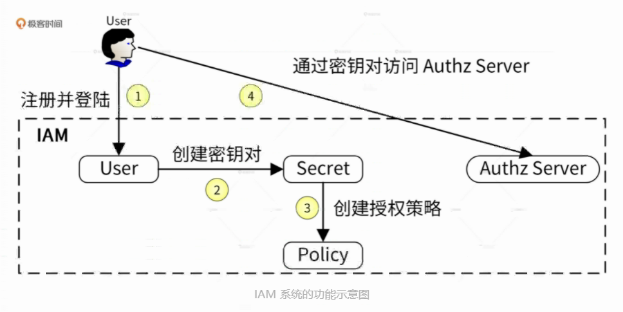
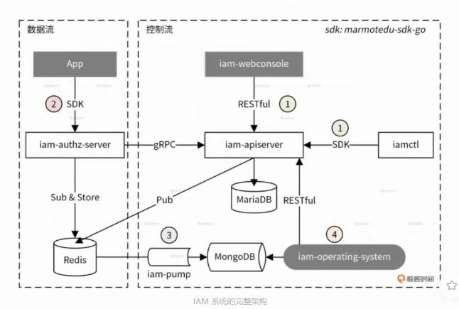
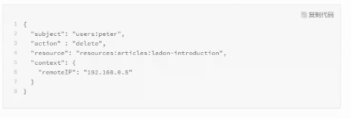
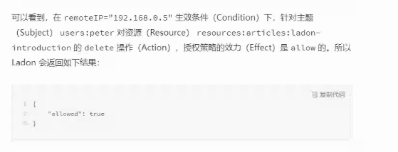
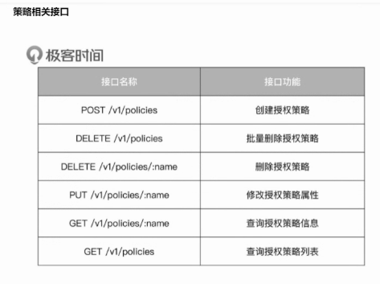

IAM / 鉴权的相关调研
四个 W, why , what , when , where
why iam 问题 , 背景是什么
主要的问题出现在 B 端, 云产品
B 端的系统通常会有很多个子系统组成, 许多公司的这些子系统之间账号体系并不相通 , 造成的问题: 员工: 入职时操作繁琐 , 反复注册各种账号 企业管理员,如 HR, 员工信息各系统之间打不通, 难以查看和管理 (追踪员工行为, 离职回收各种账号) 公司的内部开发者: 重复开发注册登录授权鉴权等功能,不同子系统要打通数据的时候困难
iam 是什么
简单理解的话其实就是把认证和鉴权从各个系统抽离, 形成一个单独的服务 , 用户访问每个已经接入 iam 的子系统时, 子系统通过访问 iam 的接口进行注册,登录,认证,鉴权. 相当于用户先在 iam 注册了一个 iam user, 通过 iam user 的 id 和每个子系统进行关联
这是 iam 的一个架构图
使用的例子: 老王打开电脑，输入应用门户的地址，使用账号密码或扫码登录，在工作台中就可以看到阿里云、企业微信、Gitlab、禅道、OA等各种平时需要用到的应用。 来源
从工作台到子应用(如阿里云) 有多种实现方案 1 如微信公众号平台的方案 , oauth2 授权, 然后子系统自身生成一个用户并和 iam user id 关联
2 iam 创建用户之后, 管理员给 iam 授予对应的应用权限 , 此时自动创建各应用的子账号并和 iam user id 关联
IAM 的一般功能组成 , 主要是4A
账号（Account） 认证（Authentication） 权限（Authorization） 应用（Application）
审计（Audit）
EIAM是 Employee Identity and Access Management 的缩写，指管理企业内部员工的IAM，主要解决员工使用的便捷性和企业管理的安全性相关问题。
需要集成企业的云应用、本地应用 需要集成不同的身份源 SSO和MFA很常用 不同企业所需的访问控制力度不同
认证模块
提供的接口有
register() login()
鉴权模块
set_perm() check_perm()
主要参考的系统
go iam

这里的 user 是各种内部服务

api-server : 用户的注册登录 , 权限配置
auth server: 从 api server 拉取权限策略 , 请求/v1/authz 查询是否有权限
其他部分是一些日志, 客户端 , sdk
webconsole 是运营平台
redis 用来缓存
mariadb 存主要数据
mongodb 操作日志
提供的接口:
/v1/authz 检查权限
...
权限部分
使用了开源库 ladon , 当一个用户调用接口检查权限时 , 需要发过来一条请求相关的策略信息 , 主要信息有:
subject : 相当于 who 在调用 , 比如 users:peter , service: saas , 或者域名
action : 比如 crud ,
effect: 允许 或拒绝 , 又 auth server 提供
resource: 资源 , 如 resources: article: ladon-intro
condition:
desc:


ladon 还支持其他 condition 匹配
ladon 里存的是一条一条的 policy , 每个 Policy 就是上面的 6 个元素 , 也就是要给每个用户分配 policy 列表
如何改成 RBAC , 接口粒度的? condition 里匹配?
表还是那几张表, 但是生成策略到缓存里的时候用 ladon (看 api server , 还有和 auth s 的交互)

源码?
重要章节 31 29 28 27 26 25 24 01
总结, server 存各种用户的策略表 , authz 接口做策略匹配 , 十分通用 , 十分复杂 , 目前没必要... 因为没有各个系统(内部服务)互相访问的需求 , 权限校验甚至做在网关就行了
tencent blueking iam
bhatti saas rbac
参考资料
- 一文读懂IAM（身份与访问管理）
- ladon
- mscode
- go iam 项目实战
- 授权-凤凰架构
- abac vs rbac
- tencent 蓝鲸 iam 估计是 go iam 差不多
- bhatti saas rbac
- staffjoy
- 其他 micro service 教程里的系统 , 如凤凰架构(就是 rbac + oauth2)